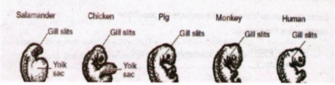
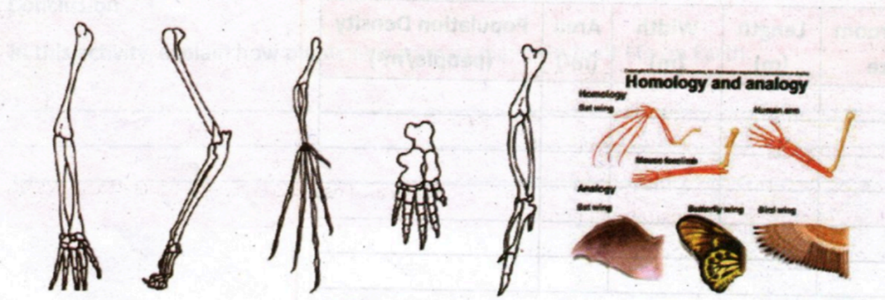
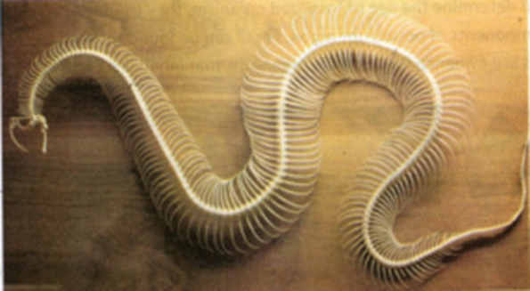
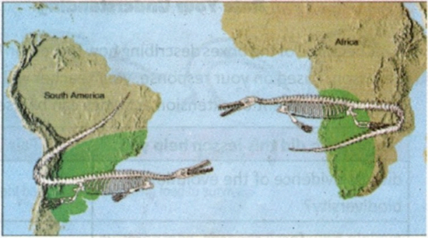
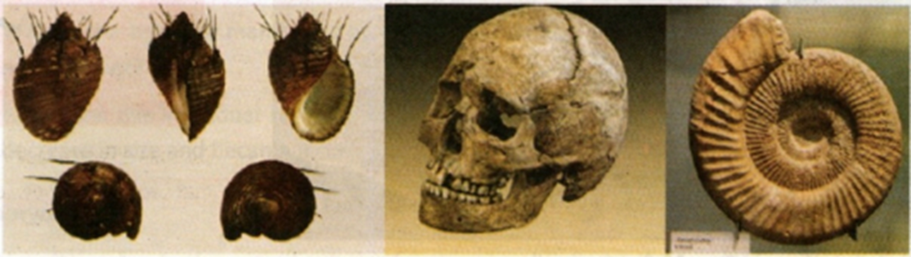
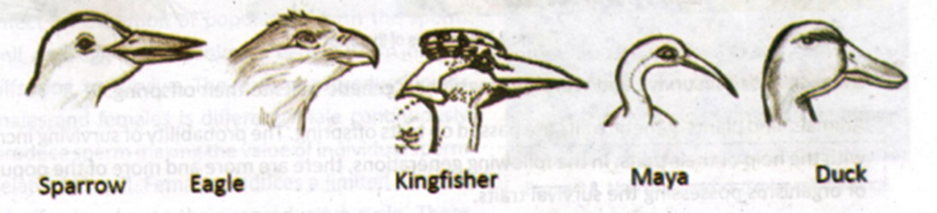
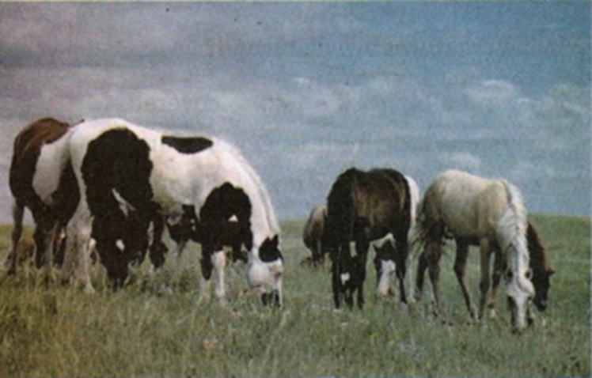
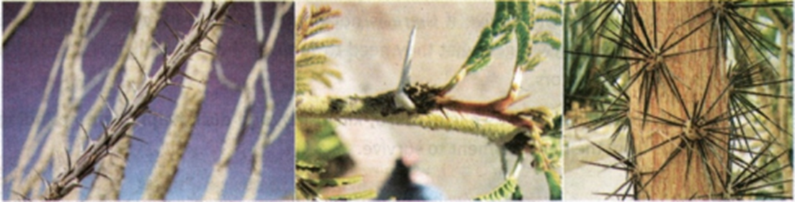
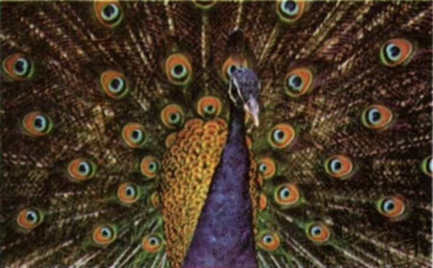

LESSON 1: EVIDENCE OF EVOLUTION
1. Embryology
Embryology refers to the scientific study of embryos and their development.
Many scientists believed and observed that during the early development, the
embryo of many vertebrates such as fish, birds, mammals, and reptiles are
almost impossible and hard to understand. These vertebrate animals have
similarities based on the result of shared common ancestry. As they improved
gradually, the vertebrate animals developed a unique characteristic that
differentiates them from the other animal species. The development of the
characteristics shows the evidence for the macroevolution ancestry of each
animal.

2. Homologous Structure
Homologous structure refers to the physical structures of the organisms that
have the same evolutionary origin and positions. For instance, the
appendages of vertebrate animals have the same evolutionary origin. As they
progress, the animals developed differently in response to the function of
their appendages. The legs of amphibians are adapted for walking and
crawling, while the wings of avians are adapted to fly.

3. Vestigial Structure
It refers to the structure of animals which is gradually disappearing. One of
the structures of an animal usually gets smaller compared to other animal
species in earlier evolutionary lineages. A structure of an organism with
few or no function but it is clearly homologous to the structure of another
organism is called a vestigial structure.

4. Genetics
Genetic evidence is another evidence of evolution in which organisms have the
basic heredity units for all life which consists of similar nucleotides and
proteins.
5. Fossils
Fossils are the remains of plants and animals. The oldest discovered fossils
were more than 3 billion years old, which may be from microfossils of
permineralized microorganisms located in Western Australia. Fossils were
formed when living organisms are quickly buried in sand, mud, and gravel at
the bottom part of different bodies of water. Over time, particles pile up
and eventually become sedimentary rocks, preserving the original pattern of
living organisms. To determine the age of fossilized organisms, they use
radioisotope dating, such as the radioactive components of potassium-argon.
Fossils can be found with the help of paleontologists. Fossil records are
evidence for many life organisms that inhabited Earth in the past.


LESSON 2: OCCURRENCE OF EVOLUTION
The occurrence of evolution explained in Darwin's Theory of Natural Selection
happens in nature and is divided into five parts.
1. Living Things Produce More Offspring Than Actually Survive
The environment cannot support every living thing that is born. These
organisms can die from diseases, starvation, and limited space before they
are able to reproduce.
2. Each Organism Has the Ability to Survive
Not all organisms can survive if there is not enough food resources and
shelter. Every living thing has the ability to get what they need to
survive. They should know how to protect themselves from predators. For
example, the beaks of birds such as eagles, mayos, kingfishers, and ducks
help them find and obtain food from their environment to survive.

3. Variation Within a Species
Species are not exactly the same. Members of a species have variations and
differences. Variations within species can be easy to determine, such as
differences in how fast or slow an organism can run, or the number of
stripes or spots in the case of ladybugs and zebras.

4. Variation of Members of a Species
When organisms possess good traits to survive or reproduce, they are better
than others. For example, a plant with more thorns and spines grows faster
and can survive better because the thornier the plant is, the more likely it
is to be left alone by many animals rather than eaten.
5. Living Things That Survive and Reproduce Pass Their Genetic Traits to
Their Offspring
Animals' and plants' genetic traits are passed on to their offspring. The
probability of survival increases with the help of their traits. In
subsequent generations, the population of organisms possessing the survival
traits increases.

FACTORS THAT CAN LEAD TO EVOLUTION
A. Gene Flow
Certain organisms join a new population and reproduce. Their alleles become
part of their population's gene pool. The transfer of alleles from one
population to another population is called gene flow. It occurs when several
animals move from one population to another. For example, during the summer,
many pores from ferns and fungi are transferred and spread to new areas due
to wind and water currents. The area receives the population, and gene flow
increases the genetic variation. But when gene flow does not occur, there is
no chance that two populations will evolve into different species.
B. Genetic Drift
Genetic drift is a change in allele frequencies that affects organisms to be
eliminated. A small population of organisms is more likely to be affected by
chance. Some alleles will decrease in frequency and become eliminated
because of limited chance. Genetic drift is the change in allele frequencies
due to chance alone, which causes a loss of genetic diversity in a
population.
C. Mutation
New alleles can form through mutation, creating genetic variation needed for
evolution. It is one of the bases of natural selection since mutations in
germ cells may be passed to offspring. Mutation occurs in the DNA sequence,
causing a nucleotide base to be inserted, deleted, or substituted. Some
factors that cause mutation include UV light, radiation, and chemicals.

D. Sexual Selection
Unique traits of many animals improve mating success for evolution. Female
animals have a greater chance of selecting their mates. Mating has an
important effect on the evolution of populations. Both the sperm and egg
cells of animals benefit from having offspring to survive. The cost of
reproduction for males and females is different. Males continuously produce
sperm, making the value of individual sperm relatively small. Females
produce a limited number of offspring due to their reproductive cycle. There
are two types of sexual selection:
- Intersexual selection occurs when males display unique
traits to attract females.
- Intrasexual selection happens when there is competition
among males. The winner of the competition mates with the female.
LIFE LESSONS
Biodiversity is very important to all living things. They depend on the type
of ecosystem on Earth. Disruption of ecosystems decreases biodiversity.
Every single species has its own role in the ecosystem. They are part of
food webs, which lead to changes that eventually help the ecosystem retain
its natural habitat.